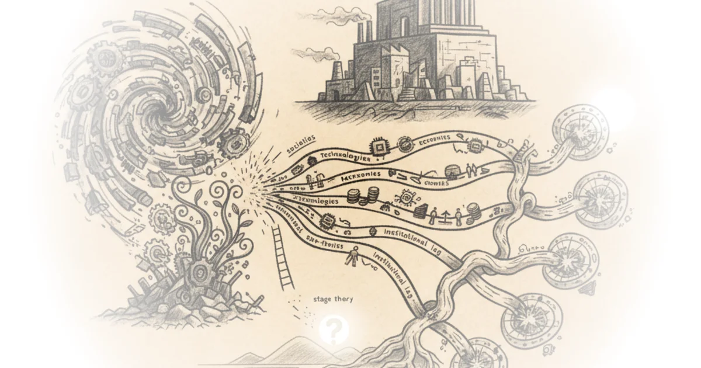

January 25, 2026 Heather Cox Richardson · Letters from an American ·Jan 26, 2026 · 10 min read · Political Strategy
Longing for the Cultural Revolution in China Today Jordan Schneider · ChinaTalk ·Jan 22, 2026 · 22 min read · China
Chartbook 429 From transition to rupture: The evolution of Carney-thought 2019-2026 Adam Tooze · Chartbook ·Jan 21, 2026 · 12 min read · Economics
Why Are There "Academic Marxists" Who Do Not Follow in Marx's Footsteps at All? Brad DeLong · DeLong's Grasping Reality ·Jan 20, 2026 · 15 min read · Economics
Kai Cenat Got Mocked for Reading Books. IShowSpeed Got Driven Out of Algeria for Being Black. Both… Kahlil Greene · History Can't Hide ·Jan 20, 2026 · 11 min read
The Rarest Artefacts From the Battle Of Trafalgar! Dan Snow · History Hit ·Jan 19, 2026 · 22 min read
Chartbook 426 Greenland v. the price of lab monkeys Adam Tooze · Chartbook ·Jan 18, 2026 · 12 min read · Economics
Unhinged Amendments That Almost Passed Devin Stone · LegalEagle ·Jan 17, 2026 · 21 min read · Law & Rights
I Met a Guerrilla Fighter that Evaded US-Backed Death Squads for 20 Years. Here are 7 Takeaways… Kahlil Greene · History Can't Hide ·Jan 16, 2026 · 11 min read
January 15, 2026 Heather Cox Richardson · Letters from an American ·Jan 16, 2026 · 10 min read · Political Strategy
Crosspost: Alan Wolff: Bamboozled: What made anyone think the Trump tariffs were legal? Brad DeLong · DeLong's Grasping Reality ·Jan 15, 2026 · 10 min read · Economics
How Walt Disney Staked Everything on Disneyland Fred Mills · The B1M ·Jan 14, 2026 · 13 min read · Housing & Cities
Was Nero the Antichrist? (and why early Christians thought he’d rise again) Andrew Henry · Religion For Breakfast ·Jan 13, 2026 · 23 min read · Faith
January 10, 2026 Heather Cox Richardson · Letters from an American ·Jan 10, 2026 · 11 min read · Political Strategy
On the Birth of Science as We Know It: Thinking Out Loud: Thursday Economic History Brad DeLong · DeLong's Grasping Reality ·Jan 8, 2026 · 17 min read · Economics
Six Analytical Threads in Search of Useful Empirical Traction: On Karl Marx's 1859 "Preface" Brad DeLong · DeLong's Grasping Reality ·Jan 8, 2026 · 12 min read · Economics 
January 7, 2026 Heather Cox Richardson · Letters from an American ·Jan 7, 2026 · 11 min read · Political Strategy
Chartbook 424 The world of Risk, the "Donroe doctrine" & the geoeconomics of the Venezuelan… Adam Tooze · Chartbook ·Jan 7, 2026 · 10 min read · Economics
January 5, 2026 Heather Cox Richardson · Letters from an American ·Jan 6, 2026 · 13 min read · Political Strategy
7 Signs of the New Renaissance Close Reading Poetry · Close Reading Poetry ·Jan 5, 2026 · 23 min read · Writing & Craft
Chartbook 423 Some topical material on Venezuela. Hopefully useful Adam Tooze · Chartbook ·Jan 5, 2026 · 14 min read · Economics
Venezuela: The Precedents Timothy Snyder · Timothy Snyder ·Jan 4, 2026 · 10 min read · Political Strategy
(Largely) Hoisted From THE Archives: “West”, “North Atlantic”, or “Dover Circle”? Brad DeLong · DeLong's Grasping Reality ·Jan 2, 2026 · 15 min read · Economics
Reading: John Maynard Keynes on Isaac Newton Brad DeLong · DeLong's Grasping Reality ·Jan 2, 2026 · 24 min read · Economics
Crosspost: Bret Devereaux: Once You Imagine Aleksander the Great’s Victims as People… Brad DeLong · DeLong's Grasping Reality ·Jan 2, 2026 · 14 min read · Economics